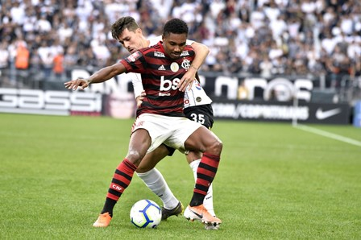

Flamengo deve ter desfalques de medalhões para jogo da Libertadores

Jorge Jesus - Luciano Belford/Agência O Dia
O técnico Jorge Jesus tentou se precaver e fez algumas mudanças na equipe, e deixou, por exemplo, Rafinha no banco. A boa notícia foi a estreia de Gerson com desenvoltura.
- Estamos com alguns jogadores em dificuldades. O Bruno Henrique não entrou 100%. O Everton está com um trauma no pé. O Rafinha está muito tempo parado, estava com fadiga muscular. Hoje foi o joelho do Vitinho. Fui contratado para encontrar soluções. O que interessa é o Flamengo, jogar jogo a jogo - disse o treinador.
A situação dos jogadores
Ribeiro: retirado da relação do jogo contra o Corinthians, fez exames no pé esquerdo e foi constatada uma lesão óssea. Será reavaliado, mas dificilmente viajará com o restante da delegação.
Bruno Henrique: começou no banco contra o Corinthians e entrou no segundo tempo, mesmo sem estar 100% recuperado do entorse no tornozelo. A expectativa é boa para que possa atuar contra o Emelec.
Vitinho: deixou o campo domingo por causa de dores no joelho esquerdo e fez exame no qual foi constatada uma lesão cápsulo ligamentar. Também será reavaliado nesta segunda-feira e dificilmente poderá enfrentar o Emelec.

Rafinha:preservado no domingo por causa de desgaste muscular, o lateral não será problema para o jogo no Equador.
Gabigol: entrou em campo com uma forte gripe no domingo, mas o artilheiro não será problema na quarta-feira.
Arrascaeta: é o único já vetado para a partida. Na melhor das hipóteses, retorna no jogo de volta contra o Emelec, no Maracanã.
Diego prevê dificuldades, mas está confiante
O jogo contra o Emelec será na quarta-feira, às 21h30 (de Brasília), em Guayaquil. O capitão Diego prevê uma batalha complicada e disse que a esta altura da competição não é possível apontar favoritos.
Será um jogo difícil, mas estamos confiantes. A equipe está em evolução, é notório. Favorito? Na Libertadores ninguém chega por acaso nessa fase. Mas temos condições de classificar. Confio nisso - disse o camisa 10. Sobre a pressão enorme em cima do time, potencializada após a eliminação na Copa do Brasil, Diego disse que é preciso ter paciência. Ele lembrou que leva tempo para as peças se encaixarem.
- A expectativa é muito alta, e temos que saber lidar com isso. Futebol não é matemática. Contrata e acontece. É um processo, que sempre é difícil. Nós estamos nesse processo. O momento da conquista vai chegar - finalizou.